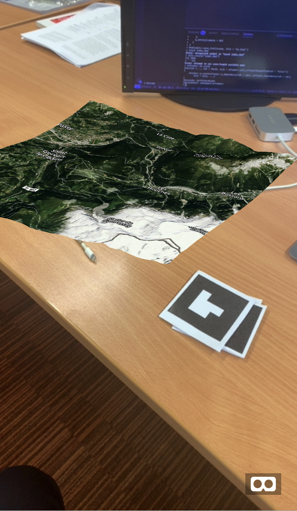

Installation
You can install the g3r from Github:
# install.packages("remotes")
remotes::install_github("JohnCoene/g3r")Htmlwidget
Note that all functions require a mapbox token, by default the function look for the MAPBOX_TOKEN environment variable.
library(g3r)
g3r()Virtual Reality
There is also the aframer component. Note that we run that as a shiny app as the dependency files require to be served.
library(g3r)
library(shiny)
library(aframer)
library(aenvironment) # github/JohnCoene/aenvironment
embed_aframe(
a_scene(
a_dependency(),
g3r_aframer_dependency(FALSE),
aenvironment_dependency(),
a_environment(
environment = aframer::opts_aframe(
preset = "checkerboard"
)
),
a_map(),
a_entity(id="camera", camera = NA, `look-controls` = NA, position="0 1.6 0")
)
)
Augmented Reality
As Augmented Reality with arframer.
library(g3r)
library(aframer)
library(arframer)
browse_aframe(
a_scene(
a_dependency(),
arframer_dependency(),
g3r_aframer_dependency(),
arjs = "sourceType: webcam; detectionMode: mono_and_matrix; matrixCodeType: 3x3; debugUIEnabled: false;",
a_primitive(
"marker",
list(
a_map(),
type = "barcode",
value = 1
)
),
a_entity(camera = NA)
)
)This will match artoolkit5 barcode 1: point your camera at it.
/1.png)
Open the demo (button) on your phone and point your camera at the marker above.
